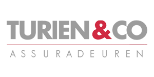

Verzekeren
Bij Turien & Co. begrijpen wij als geen ander hoe waardevol een auto voor u kan zijn. Vaak is uw auto naast een vervoermiddel echt iets waar u trots op bent. Hoe vervelend is het dan als er iets met uw auto gebeurt? Mede door onze jarenlange ervaring op het gebied van autoverzekeringen en onze eigen passie voor auto’s bent u daarom bij ons aan het juiste adres. Wij bieden u vier producten aan voor vier verschillende doelgroepen.
Prima XL
De Prima XL kenmerkt zich door een zeer uitgebreide dekking en de goede prijs/kwaliteit verhouding. De Prima XL kent een nieuwwaarde- en aanschafwaarderegeling tot € 200.000 cataloguswaarde van standaard 3 jaar, welke u kunt uitbreiden naar 5 jaar.
Prima XL Elektrisch
De Prima XL Elektrisch kenmerkt zich net als de Prima XL door een zeer uitgebreide dekking en de goede prijs/kwaliteit verhouding. De Prima XL Elektrisch kent een nieuwwaarderegeling van standaard 3 jaar, welke u kunt uitbreiden naar 5 jaar en heeft een aanschafwaarde- en nieuwwaarderegeling voor auto’s tot € 200.000 cataloguswaarde. Speciaal voor de elektrische rijder is deze verzekering voorzien van een aantal aanvullende dekkingen. Kijk voor meer informatie op onze productpagina voor de Prima XL Elektrisch autoverzekering.
Premium XL
Speciaal voor auto's vanaf € 100.000 biedt Turien & Co. de Premium XL. Deze verzekering is op diverse punten onderscheidend ten opzichte van reguliere autoverzekeringen. Zo heeft de Premium autoverzekering: Een aantrekkelijke premie;
Een uitgebreide nieuwwaarderegeling van drie jaar, uit te breiden naar vijf jaar;
Geen bonus-malustabel maar een vaste premie;
Een afwijkend eigen risico beter afgestemd op de waarde van de auto;
Leeftijd bestuurder minimaal 35 jaar;
Bestuurder heeft geen schuld- en/of diefstalschaden gedurende 5 jaar.